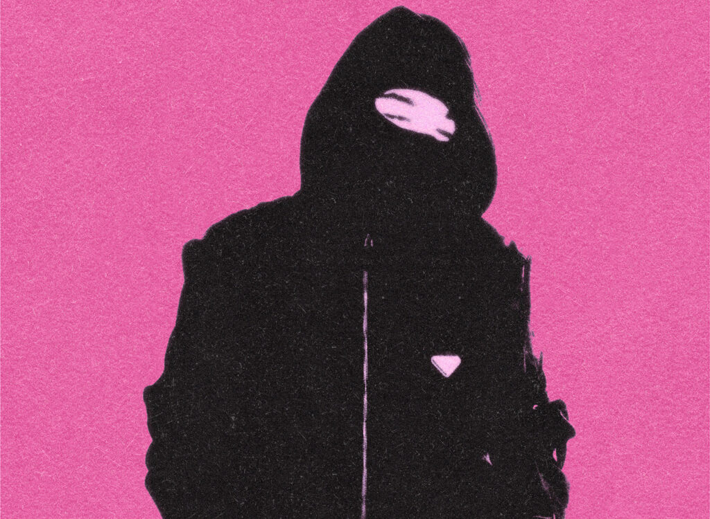

Luther

Luther ou Lutherantz, né en 2003 à Avignon, est un rappeur français. Précepteur de la New Wave, il s'inscrit dans le registre du rap français dès l'âge de 16 ans avec son album TRAME, puis se fera véritablement connaître par son album Garçon, sortit en 2022 et totalisant plus de 15 000 000 streams, qui lui vaudra un single d'or.
Style musical
Avec La Fève et So La Lune notamment, Luther se positionne en tant que pionnier de la New Wave française, adoptant un style de rap à la voix morose, sur des productions synthétiques minimalistes, influencées par l'électro et la drum and bass.